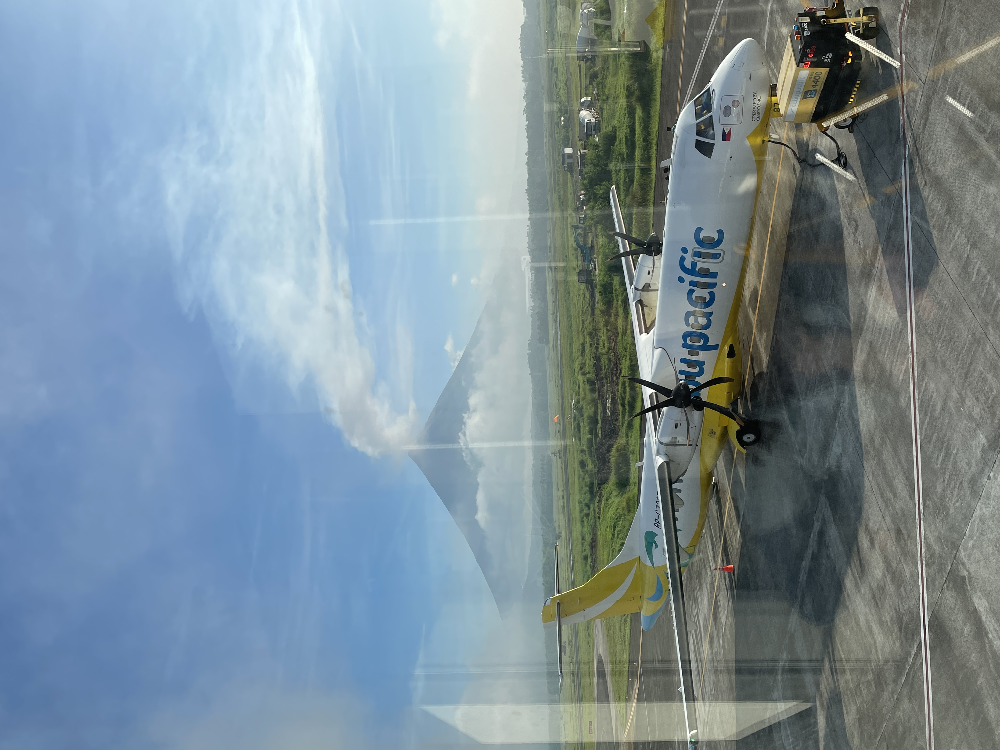
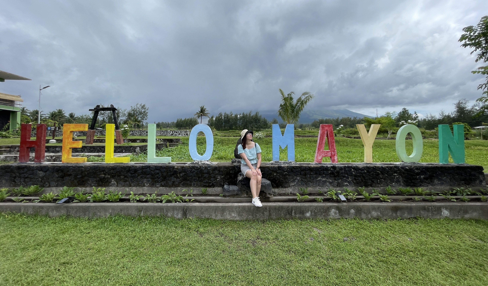
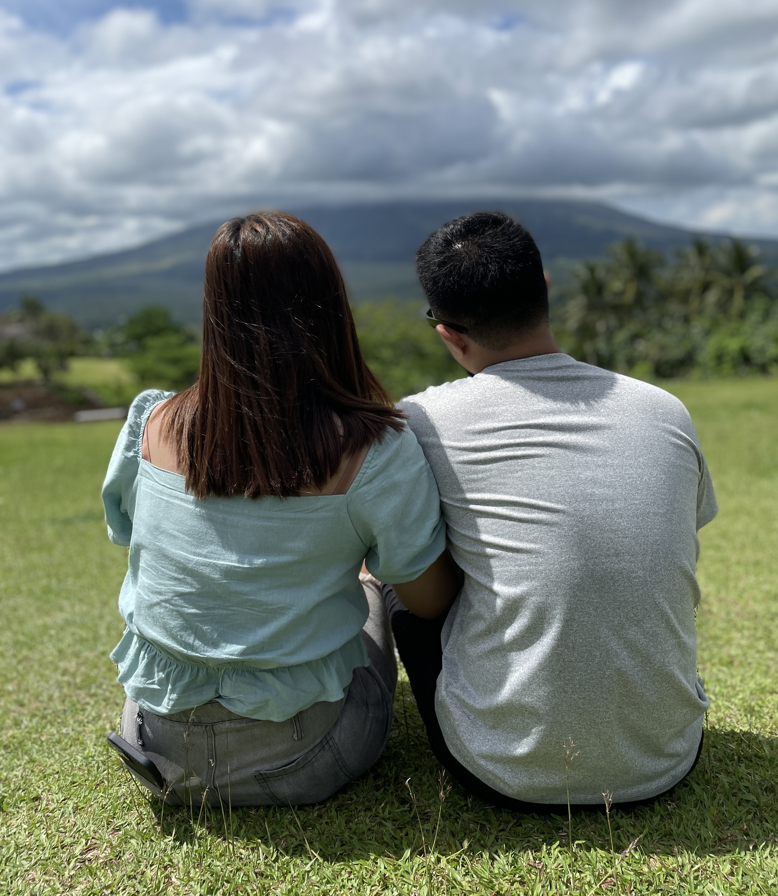
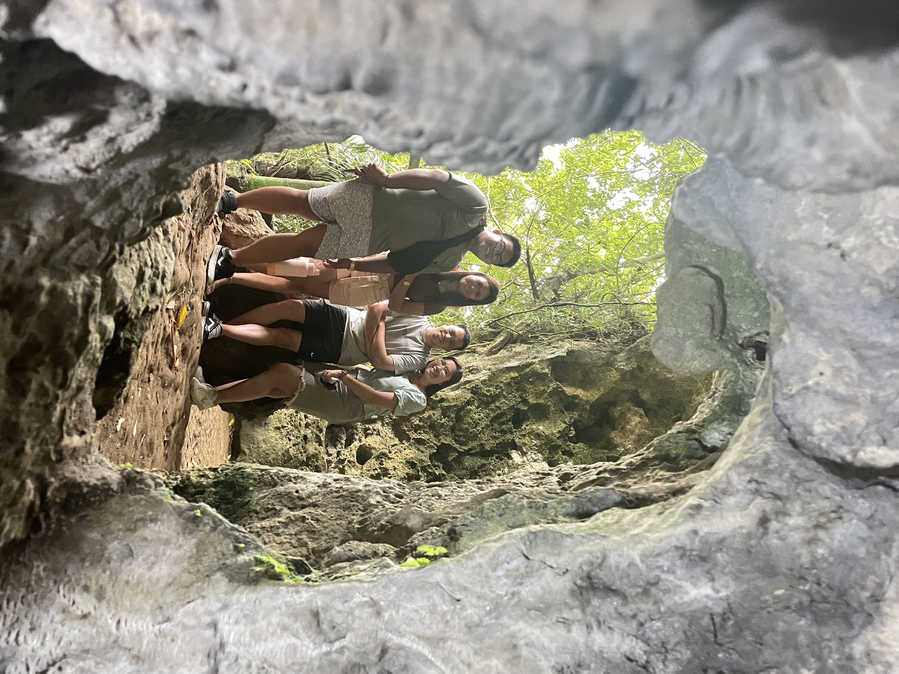
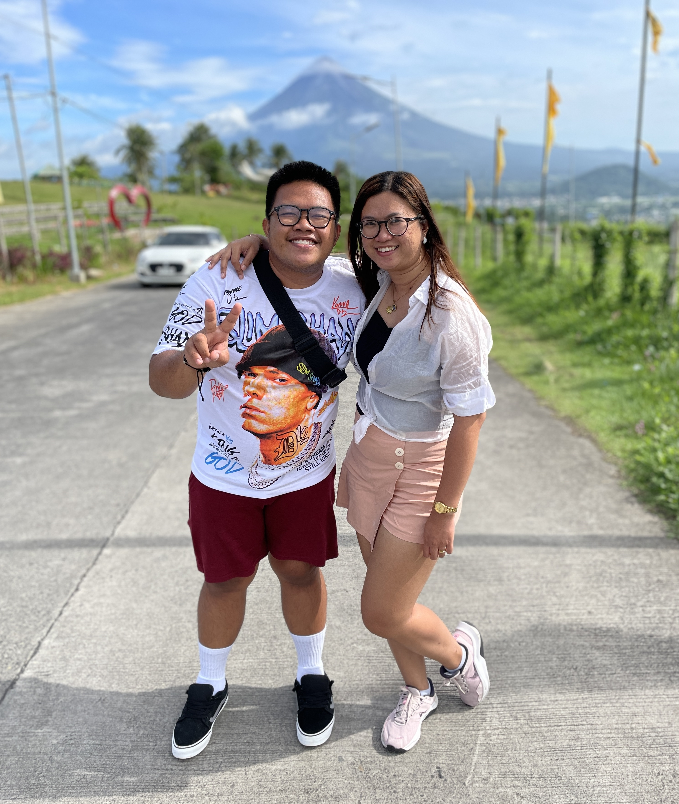

Truly Magayon: The Majestic Mt. Mayon
June 11 - 12, 2023When we left for our flight, the weather was bad here in the greater Manila area. There was an LPA and according to the weather forecast, the following days will be rainy in the Bicol region, too. Moreover, during that time, the Mayon Volcano was releasing magma out into its crater. (In fact, for the entirety of our trip, Mayon was at Alert Level 3.) So I hoped for the best, but prepared myself for the worst.
By the time we landed in Bicol International Airport, the weather condition seemed to have improved. “Off to a good start”, I said to myself. But as the days went on, we started to believe that we got lucky to have a pleasant travel experience (weather-wise) all throughout. There was one thing we weren't fortunate enough to witness, though — the Mayon Volcano, without the clouds covering its tip.
We adapted a backwards approach for this trip. We visited the farthest places in our itinerary first, slowly making our way back to Legazpi City because we're booked to have our flight back home at Bicol International Airport, as well. I was starting to regret not making a stopover on our way to Matnog during our first day, when we've just landed and Mayon was calmer. We could've searched for a good location where we could snap pictures of this massive, perfect cone-shaped creation towering in the middle of this rich archipelago. I just thought that a visit in the Bicol region would never be complete without seeing Mayon in its full glory.
Moving on, during our 4th day, we've been to Daraga Church, the Cagsawa Ruins, Sumlang Lake, and even Quituinan Ranch — basically every famous location that offers a great view of Mt. Mayon. But I guess we've finally run out of luck. Otherwise, we would be looking up by now, with our eyes wide open, completely captivated by Mayon's beauty. There were other places we've gone to like Quitinday Hills and Hoyop-hoyopan Cave, but the famous volcano is not greatly seen from there. I've honestly lost hope at that point.
 Then came the morning before our flight home and it seemed like Mayon actually waited for the last minute of our trip before giving us its parting gift, which would make our last day here more exciting. Even from the rooftop of Casa Vecino, the BNB where we're staying, we could see that there was almost no cloud covering its crater. We ate our free breakfast as quickly as we could, planned our route to the airport, and even asked the Grab Driver that we've booked to take us to Highlands. Originally, the plan was to make a quick stop at the Boulevard, but that was opposite the direction to the airport. So the Highlands was the second most ideal place to witness the majestic Mt. Mayon in all its breathtaking charm, and IT.. WAS.. SO WORTH IT.
All things considered, I might even say that we were blessed and that fate was on our side. In the end, everything worked out (as most things in life do.) It was definitely a core memory, one I would never forget.